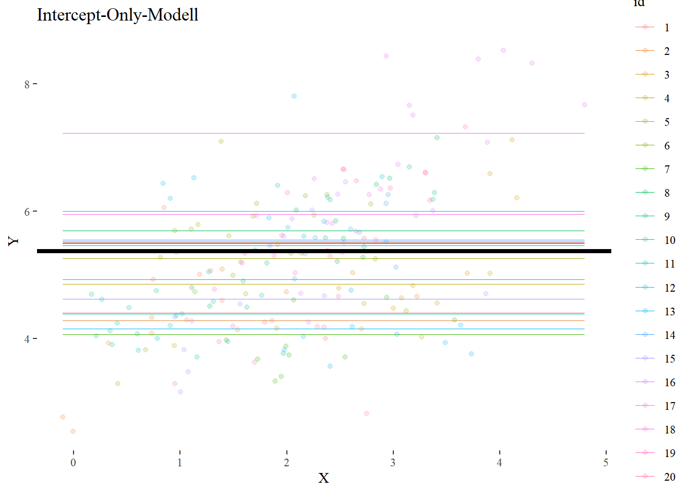
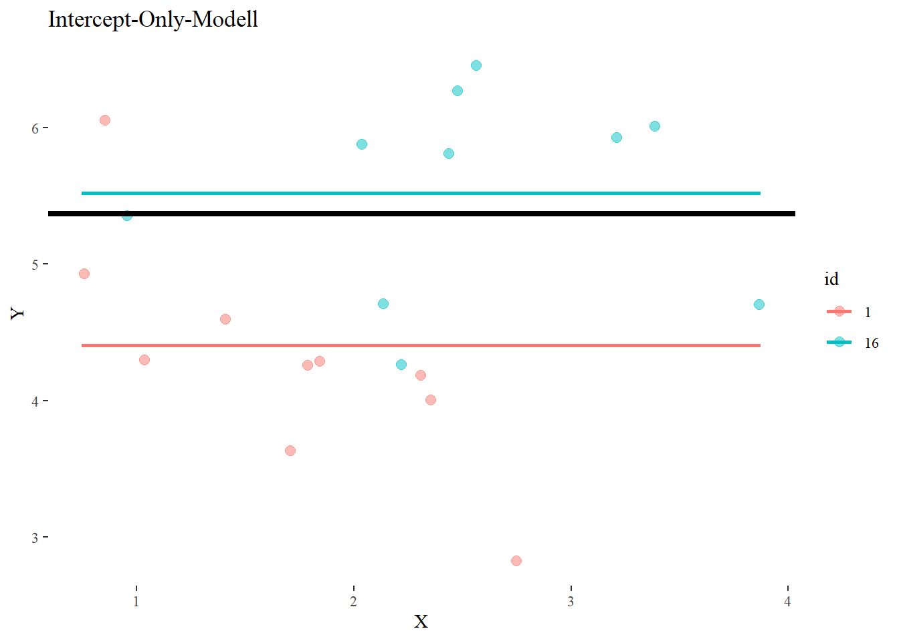
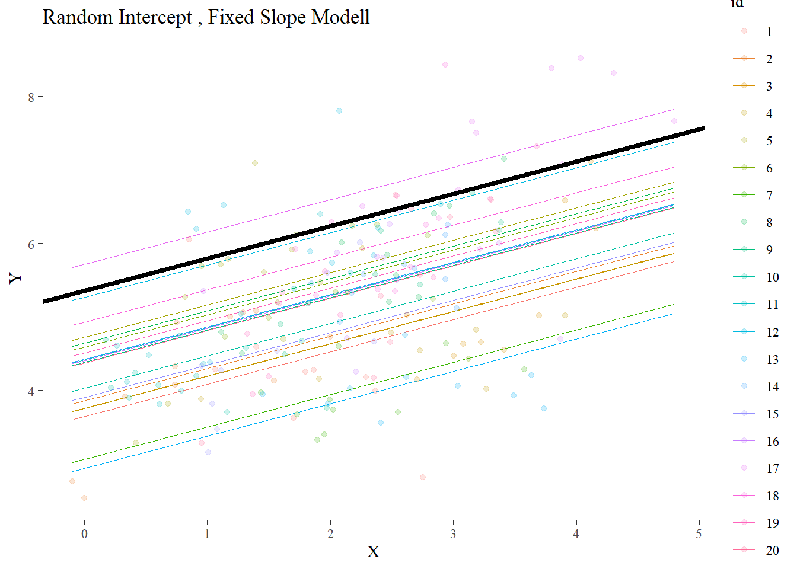
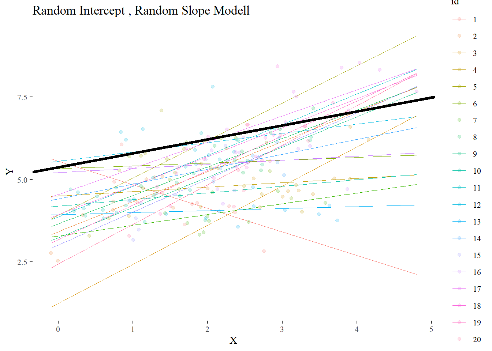
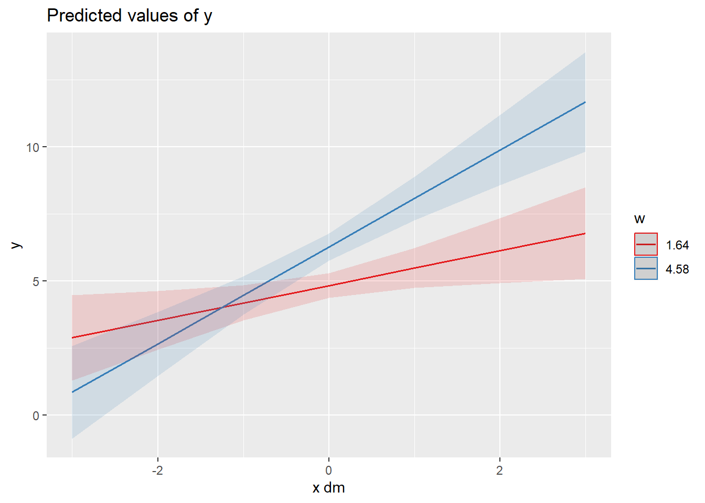
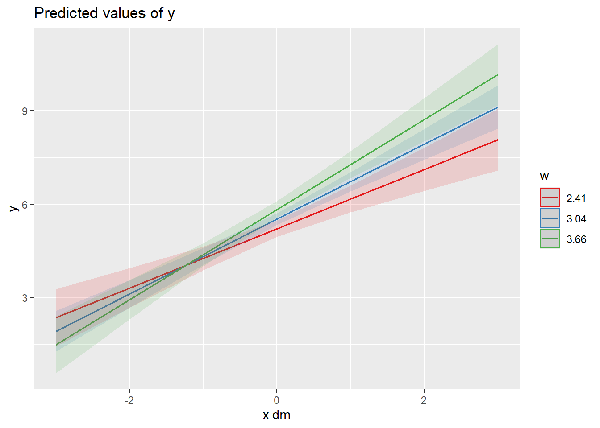
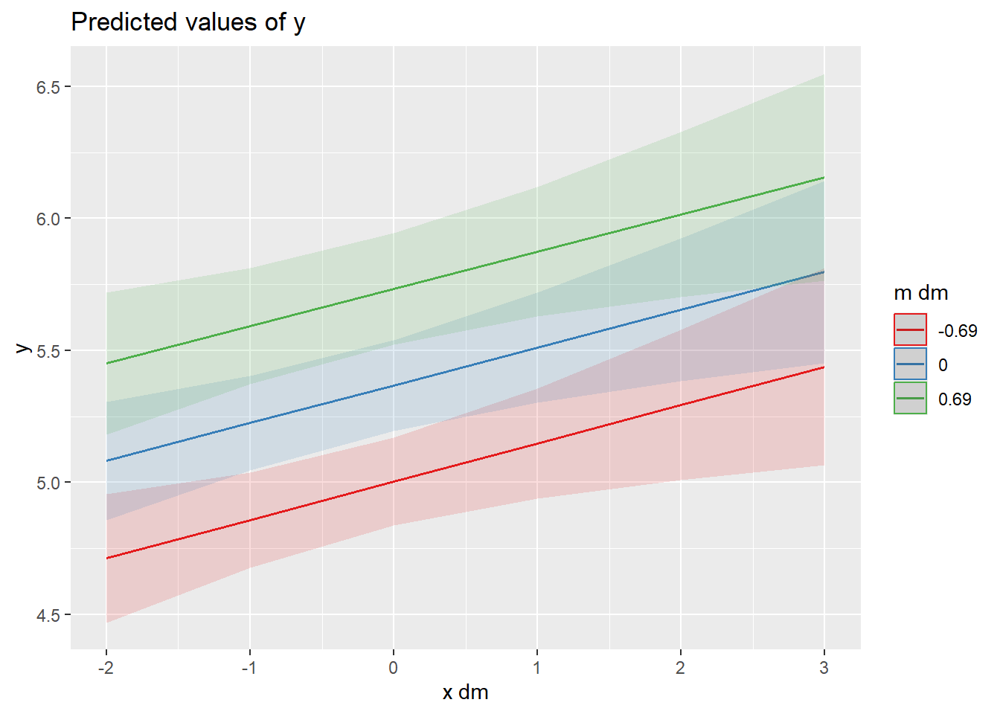

if (!require("pacman")) install.packages("pacman")Loading required package: pacmanpacman::p_load(lmerTest, haven, brms, psych,
sjmisc, sjPlot, writexl, broom.mixed, qgraph,
tidyverse, multilevelTools, parameters)In diesem Kapitel verwenden wir verschiedene Regressionsmodelle die zur Überprüfung von Hypothesen eingesetzt werden.
Install packages
if (!require("pacman")) install.packages("pacman")Loading required package: pacmanpacman::p_load(lmerTest, haven, brms, psych,
sjmisc, sjPlot, writexl, broom.mixed, qgraph,
tidyverse, multilevelTools, parameters)load("../data/df_example1.RData")
load("../data/df_example1c.RData")Für diese Einheit verwenden wir den folgenden Datensatz (data.frame/tibble):
head() oder print().head(df_example1)| id | y | m | x | y_dm | m_dm | x_dm | y_gm | m_gm | x_gm |
|---|---|---|---|---|---|---|---|---|---|
| 1 | 4.003538 | 4.769391 | 2.365486 | -0.3020232 | 0.8945291 | 0.6845636 | 4.305561 | 3.874862 | 1.680922 |
| 1 | 4.925174 | 2.510943 | 0.748855 | 0.6196128 | -1.3639189 | -0.9320674 | 4.305561 | 3.874862 | 1.680922 |
| 1 | 4.598564 | 3.098112 | 1.395041 | 0.2930028 | -0.7767499 | -0.2858814 | 4.305561 | 3.874862 | 1.680922 |
| 1 | 4.286179 | 4.610746 | 1.860026 | -0.0193822 | 0.7358841 | 0.1791036 | 4.305561 | 3.874862 | 1.680922 |
| 1 | 4.183494 | 4.549044 | 2.288019 | -0.1220672 | 0.6741821 | 0.6070966 | 4.305561 | 3.874862 | 1.680922 |
| 1 | 3.631716 | 3.590049 | 1.696510 | -0.6738452 | -0.2848129 | 0.0155876 | 4.305561 | 3.874862 | 1.680922 |
Im Folgenden betrachten wir ein Modell in dem y durch x vorhergesagt wird.
Die Funktion lmer() benötigt zwei Argumente, (a) die Formel und (b) den Datensatz. Zum Aufbau und Details der Formeln s. Folien.
Level 1: \(y_{ij} = \beta_{0j} + e_{ij}\)
Level 2 (random intercept): \(\beta_{0j} = \gamma_{00} + u_{0j}\)
nullmodel <- lmer(y ~ (1 | id), data = df_example1)Zur Ansicht der Ergebnisse haben wir zwei Optionen: Den summary() Befehl - die Standardansicht, wie von den Paketautoren implementiert, den tidy() Befehl aus dem broom-Package, und den model_parameters() Befehl aus dem parameters Package. tidy() und model_parameters() Funktionsoutputs könnten nach Excel/Word exportiert werden mittels der write_xlsx() Funktion, oder indem das Notebook als .docx “gerendert” (ausgegeben) wird.
summary(nullmodel)Linear mixed model fit by REML. t-tests use Satterthwaite's method [
lmerModLmerTest]
Formula: y ~ (1 | id)
Data: df_example1
REML criterion at convergence: 2742.9
Scaled residuals:
Min 1Q Median 3Q Max
-6.1492 -0.5420 -0.0369 0.5543 4.6493
Random effects:
Groups Name Variance Std.Dev.
id (Intercept) 0.6902 0.8308
Residual 0.7164 0.8464
Number of obs: 1000, groups: id, 100
Fixed effects:
Estimate Std. Error df t value Pr(>|t|)
(Intercept) 5.36755 0.08728 99.00000 61.5 <2e-16 ***
---
Signif. codes: 0 '***' 0.001 '**' 0.01 '*' 0.05 '.' 0.1 ' ' 1tidy(nullmodel)| effect | group | term | estimate | std.error | statistic | df | p.value |
|---|---|---|---|---|---|---|---|
| fixed | NA | (Intercept) | 5.3675530 | 0.0872832 | 61.49586 | 99 | 0 |
| ran_pars | id | sd__(Intercept) | 0.8307776 | NA | NA | NA | NA |
| ran_pars | Residual | sd__Observation | 0.8464254 | NA | NA | NA | NA |
model_parameters(nullmodel) |> print_html()| Model Summary | |||||
| Parameter | Coefficient | SE | 95% CI | t(997) | p |
|---|---|---|---|---|---|
| Fixed Effects | |||||
| (Intercept) | 5.37 | 0.09 | (5.20, 5.54) | 61.50 | < .001 |
| Random Effects | |||||
| SD (Intercept: id) | 0.83 | ||||
| SD (Residual) | 0.85 | ||||
Ich bevorzuge persönlich den Output von model_parameters(), aber das ist Geschmackssache.
Aus dem Null-Model wird der ICC bestimmt. Dies haben wir in der vorhergehenden
ICC: \(\frac{\tau_{00}}{\tau_{00}+\tau_{ij}}\), \(\tau\) gibt die Varianz des jewiligen Koeffizienten an.
Wir können dies aus dem Modelloutput nehmen und berechnen:
modelsummary <- model_parameters(nullmodel)
tau00 <- modelsummary$Coefficient[modelsummary$Parameter == "SD (Intercept)"]^2
tauij <- modelsummary$Coefficient[modelsummary$Parameter == "SD (Observations)"]^2
tau00 / (tau00+tauij)[1] 0.4906711# performance::icc(nullmodel) # AlternativfunktionWir können uns die Analysen visualisieren, hier zur reduzierten visuellen Komplexität nur auf Basis der ersten 20 Personen (ID 1-20.)
df_example1 <- df_example1 |> mutate(predicted_ri = predict(nullmodel))
xlabel <- "X"
ylabel <- "Y"
ggplot(data = df_example1 |> filter(id %in% 1:20), aes(
x = x,
y = predicted_ri,
colour = id
)) +
geom_smooth(method = "lm", fullrange = TRUE, se = F, size = .3) +
geom_jitter(aes(y = y), alpha = .2) +
labs(x = xlabel, y = ylabel) +
ggtitle("Intercept-Only-Modell") +
scale_colour_discrete() +
geom_abline(intercept = fixef(nullmodel), slope = 0, size = 1.5) +
ggthemes::theme_tufte()Warning: Using `size` aesthetic for lines was deprecated in ggplot2 3.4.0.
ℹ Please use `linewidth` instead.`geom_smooth()` using formula = 'y ~ x'
Oder zwei Personen, um uns die einzelnen Punkte auch anschauen zu können
ggplot(data = df_example1 |> filter(id %in% c(1, 16)), aes(
x = x,
y = predicted_ri,
colour = id
)) +
geom_smooth(method = "lm", fullrange = TRUE, se = F, size = 1) +
geom_jitter(aes(y = y), alpha = .5, size = 2.5) +
labs(x = xlabel, y = ylabel) +
ggtitle("Intercept-Only-Modell") +
scale_colour_discrete() +
geom_abline(intercept = fixef(nullmodel), slope = 0, size = 1.5) +
ggthemes::theme_tufte()`geom_smooth()` using formula = 'y ~ x'
Als nächstes bauen wir den Prädiktor x ein. Wir verwenden hier die zentrierte Variable “_dm” um Inner-Person Effekte zu berechnen.
Level 1: \(y_{ij} = \beta_{0j} + \beta_{1j}*X_{ij} + e_{ij}\)
Level 2 (random intercept): \(\beta_{0j} = \gamma_{00} + u_{0j}\)
Level 2 (fixed effect only): \(\beta'_{1j} = \gamma'_{10}\)
ri.fs_modell <- lmer(y ~ x_dm + (1 | id), data = df_example1)model_parameters(ri.fs_modell) |> print_html()| Model Summary | |||||
| Parameter | Coefficient | SE | 95% CI | t(996) | p |
|---|---|---|---|---|---|
| Fixed Effects | |||||
| (Intercept) | 5.37 | 0.09 | (5.20, 5.54) | 61.50 | < .001 |
| x dm | 0.44 | 0.04 | (0.36, 0.51) | 11.63 | < .001 |
| Random Effects | |||||
| SD (Intercept: id) | 0.84 | ||||
| SD (Residual) | 0.79 | ||||
df_example1 <- df_example1 |> mutate(predicted_rifs = predict(ri.fs_modell))
ggplot(data = df_example1 |> filter(id %in% 1:20), aes(
x = x,
y = predicted_rifs,
colour = id
)) +
geom_smooth(method = "lm", fullrange = TRUE, se = F, size = .3) +
geom_jitter(aes(y = y), alpha = .2) +
labs(x = xlabel, y = ylabel) +
ggtitle("Random Intercept , Fixed Slope Modell") +
scale_colour_discrete() +
geom_abline(
intercept = fixef(ri.fs_modell)["(Intercept)"],
slope = fixef(ri.fs_modell)["x_dm"],
size = 1.5
) +
ggthemes::theme_tufte()`geom_smooth()` using formula = 'y ~ x'
Als nächstes fügen wir den random slope der Prädiktorvariable x_dm hinzu, in dem wir die random effect Struktur erweitern - “(1 + x_dm | id)”.
Level 1: \(y_{ij} = \beta_{0j} + \beta_{1j}*(X_{ij}-\overline{X_j}) + e_{ij}\)
Level 2 (random intercept): \(\beta_{0j} = \gamma_{00} + u_{0j}\)
Level 2: \(\beta'_{1j} = \gamma'_{10}\)
ri.rs_modell <- lmer(y ~ x_dm + (1 + x_dm | id), data = df_example1)
model_parameters(ri.rs_modell) |> print_html()| Model Summary | |||||
| Parameter | Coefficient | SE | 95% CI | t(994) | p |
|---|---|---|---|---|---|
| Fixed Effects | |||||
| (Intercept) | 5.37 | 0.09 | (5.20, 5.54) | 61.50 | < .001 |
| x dm | 0.42 | 0.07 | (0.28, 0.56) | 5.88 | < .001 |
| Random Effects | |||||
| SD (Intercept: id) | 0.85 | ||||
| SD (x_dm: id) | 0.63 | ||||
| Cor (Intercept~x_dm: id) | 0.20 | ||||
| SD (Residual) | 0.65 | ||||
df_example1 <- df_example1 |> mutate(predicted_rirs = predict(ri.rs_modell))
ggplot(data = df_example1 |> filter(id %in% 1:20), aes(
x = x,
y = predicted_rirs,
colour = id
)) +
geom_smooth(method = "lm", fullrange = TRUE, se = F, size = .3) +
geom_jitter(aes(y = y), alpha = .2) +
labs(x = xlabel, y = ylabel) +
ggtitle("Random Intercept , Random Slope Modell") +
scale_colour_discrete() +
geom_abline(
intercept = fixef(ri.rs_modell)["(Intercept)"],
slope = fixef(ri.rs_modell)["x_dm"],
size = 1.5
) +
ggthemes::theme_tufte()`geom_smooth()` using formula = 'y ~ x'
Als nächstes fügen wir einen Level-2 Prädiktor hinzu, der pro Person nur einmal gemessen wurde. Dabei handelt es sich für gewöhnlich um (1) Variablen, bei denen wir nicht an täglichen Schwankungen interessiert sind, wie soziodemografischen oder Persönlichkeitsvariablen, oder (2) den Mittelwert der Personen auf einer täglich gemessenen Variable. Im Beispiel verwenden wir (2), “x_gm”.
Level 1: \(y_{ij} = \beta_{0j} + \beta_{1j}*(X_{ij}-\overline{X_j}) + \beta_{2j}*\overline{X_j} + e_{ij}\)
Level 2 (random intercept): \(\beta_{0j} = \gamma_{00} + u_{0j}\) Level 2 (random slope for x): \(\beta_{1j} = \gamma_{10} + u_{2j}\)
ri.rs_l2_modell <- lmer(y ~ x_dm + x_gm + (1 + x_dm | id), data = df_example1)
model_parameters(ri.rs_l2_modell) |> print_html()| Model Summary | |||||
| Parameter | Coefficient | SE | 95% CI | t(993) | p |
|---|---|---|---|---|---|
| Fixed Effects | |||||
| (Intercept) | 4.47 | 0.19 | (4.09, 4.84) | 23.30 | < .001 |
| x dm | 0.42 | 0.07 | (0.28, 0.56) | 5.85 | < .001 |
| x gm | 0.43 | 0.08 | (0.26, 0.59) | 5.13 | < .001 |
| Random Effects | |||||
| SD (Intercept: id) | 0.75 | ||||
| SD (x_dm: id) | 0.63 | ||||
| Cor (Intercept~x_dm: id) | 0.17 | ||||
| SD (Residual) | 0.65 | ||||
Erwarten wir dass der Effekt von täglichen Schwankungen in X auf Y abhängig von einer Variablen ist, die auf Level-2 gemessen wird (z.B. relativ stabile Persönlichkeitsmerkmale), können wir dies mit einer Cross-Level Interaktion testen.
Level 1: \(y_{ij} = \beta_{0j} + \beta_{1j}*(X_{ij}-\overline{X_j}) + \beta_{2j}*W_{j} + e_{ij}\)
Level 2 (random intercept): \(\beta_{0j} = \gamma_{00} + u_{0j}\) Level 2 (random slope for x): \(\beta_{1j} = \gamma_{10} + u_{2j}\)
head(df_example1c)| id | w | y | m | x | y_dm | m_dm | x_dm | y_gm | m_gm | x_gm |
|---|---|---|---|---|---|---|---|---|---|---|
| 1 | 3.847053 | 4.064028 | 8.492899 | 4.136489 | -1.1414789 | 1.4106789 | 0.803986 | 5.205507 | 7.08222 | 3.332503 |
| 1 | 3.847053 | 3.599397 | 9.073630 | 3.728720 | -1.6061099 | 1.9914099 | 0.396217 | 5.205507 | 7.08222 | 3.332503 |
| 1 | 3.847053 | 7.704277 | 4.082619 | 2.638451 | 2.4987701 | -2.9996011 | -0.694052 | 5.205507 | 7.08222 | 3.332503 |
| 1 | 3.847053 | 6.796018 | 5.516980 | 2.761167 | 1.5905111 | -1.5652401 | -0.571336 | 5.205507 | 7.08222 | 3.332503 |
| 1 | 3.847053 | 4.723777 | 6.875090 | 3.152261 | -0.4817299 | -0.2071301 | -0.180242 | 5.205507 | 7.08222 | 3.332503 |
| 1 | 3.847053 | 3.592594 | 9.817786 | 4.168687 | -1.6129129 | 2.7355659 | 0.836184 | 5.205507 | 7.08222 | 3.332503 |
ri.rs_cli_modell <- lmer(y ~ x_dm + w + w*x_dm + (1 + x_dm | id), data = df_example1c)
model_parameters(ri.rs_cli_modell) |> print_html()| Model Summary | |||||
| Parameter | Coefficient | SE | 95% CI | t(992) | p |
|---|---|---|---|---|---|
| Fixed Effects | |||||
| (Intercept) | 4.03 | 0.48 | (3.10, 4.97) | 8.47 | < .001 |
| x dm | 4.91e-03 | 0.55 | (-1.07, 1.08) | 8.99e-03 | 0.993 |
| w | 0.49 | 0.15 | (0.19, 0.79) | 3.19 | 0.001 |
| x dm × w | 0.39 | 0.18 | (0.05, 0.74) | 2.23 | 0.026 |
| Random Effects | |||||
| SD (Intercept: id) | 0.93 | ||||
| SD (x_dm: id) | 1.04 | ||||
| Cor (Intercept~x_dm: id) | 0.14 | ||||
| SD (Residual) | 0.66 | ||||
Beachtet, dass mit der eingebauten Interaktion die Haupteffekte nicht mehr interpretiert werden.
Visualisierung des Interaktionseffekt mittels der plot_model() Funktion. Standardmässig werden die Simple Slopes an den Extremwerten (Minimum, Maximum) des Moderators geschätzt.
plot_model(ri.rs_cli_modell, type = "int", terms = c("x_dm", "w"))
ggsave("test.png")Saving 7 x 5 in imageAlternativ kann man auch die Werte zum Mittelwerte und bei -1 SD und +1 SD des Moderators anzeigen lassen.
plot_model(ri.rs_cli_modell, type = "int", mdrt.values = "meansd")
Der Plot zeigt, dass bei höheren Ausprägungen von w der Effekt von x_dm stärker ausfällt.
Analog zur Cross-level Interaktion gibt es auch Within-level Interaktionen, bei der die Level-1 Anteile von Prädiktorvariablen miteinander interagieren.
Level 1: \(y_{ij} = \beta_{0j} + \beta_{1j}*(X_{ij}-\overline{X_j}) + \beta_{2j}*(M_{ij}-\overline{M_j}) + \beta_{3j}*((M_{ij}-\overline{M_j})*(X_{ij}-\overline{X_j})) + e_{ij}\)
Level 2 (random intercept): \(\beta_{0j} = \gamma_{00} + u_{0j}\) Level 2 (random slope X): \(\beta_{1j} = \gamma_{10} + u_{1j}\) Level 2 (random slope M): \(\beta_{2j} = \gamma_{20} + u_{2j}\)
ri.rs_wli_modell <- lmer(y ~ x_dm + m_dm + x_dm*m_dm + (1 + x_dm + m_dm | id), data = df_example1)
model_parameters(ri.rs_wli_modell) |> print_html()| Model Summary | |||||
| Parameter | Coefficient | SE | 95% CI | t(989) | p |
|---|---|---|---|---|---|
| Fixed Effects | |||||
| (Intercept) | 5.37 | 0.09 | (5.20, 5.54) | 61.25 | < .001 |
| x dm | 0.14 | 0.05 | (0.05, 0.23) | 3.14 | 0.002 |
| m dm | 0.53 | 0.06 | (0.41, 0.65) | 8.94 | < .001 |
| x dm × m dm | -2.87e-03 | 0.04 | (-0.07, 0.07) | -0.08 | 0.936 |
| Random Effects | |||||
| SD (Intercept: id) | 0.86 | ||||
| SD (x_dm: id) | 0.30 | ||||
| SD (m_dm: id) | 0.48 | ||||
| Cor (Intercept~x_dm: id) | 0.29 | ||||
| Cor (Intercept~m_dm: id) | 0.38 | ||||
| Cor (x_dm~m_dm: id) | 0.57 | ||||
| SD (Residual) | 0.54 | ||||
plot_model(ri.rs_wli_modell, type = "int", mdrt.values = "meansd")
Der Interaktionseffekt ist nicht signifikant. Dies bedeutet, wie der Plot zeigt, dass die Linien bei allen Ausprägungen des Moderators mehr oder wenig parallel sind.